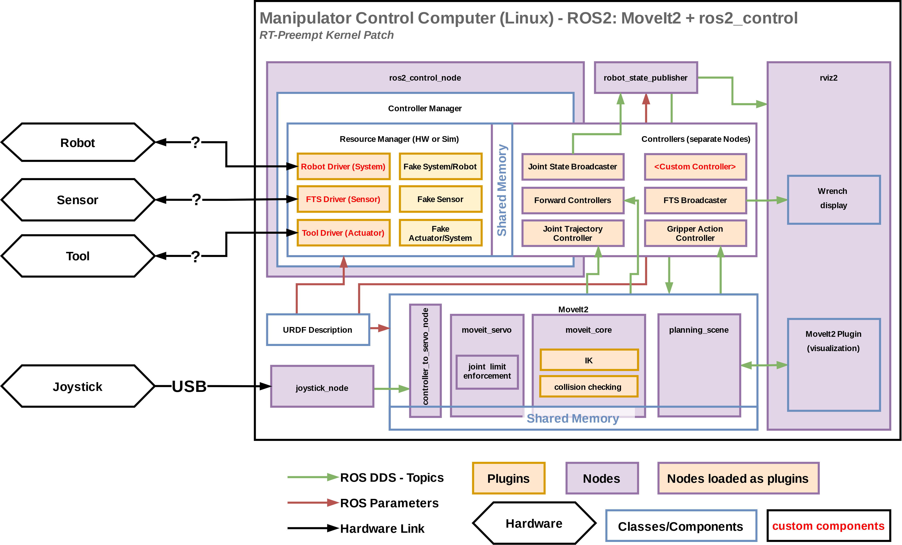
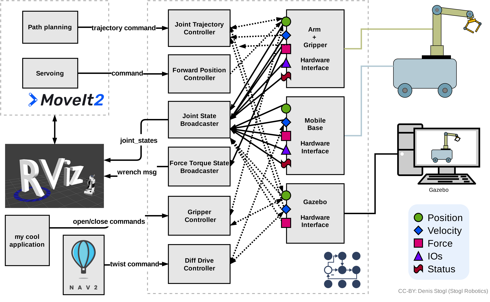
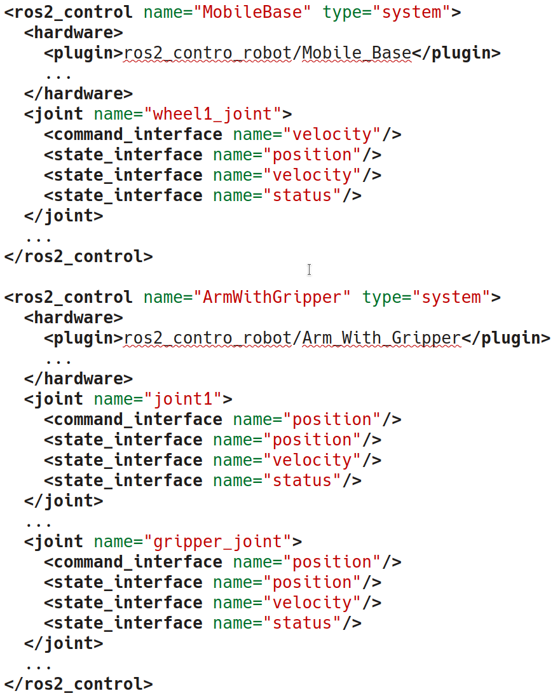
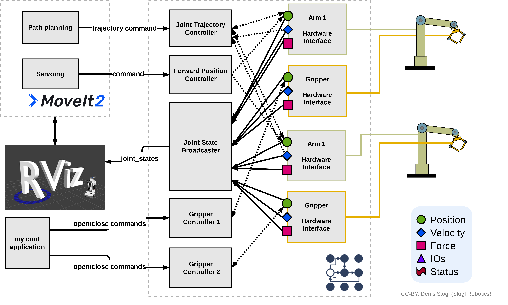
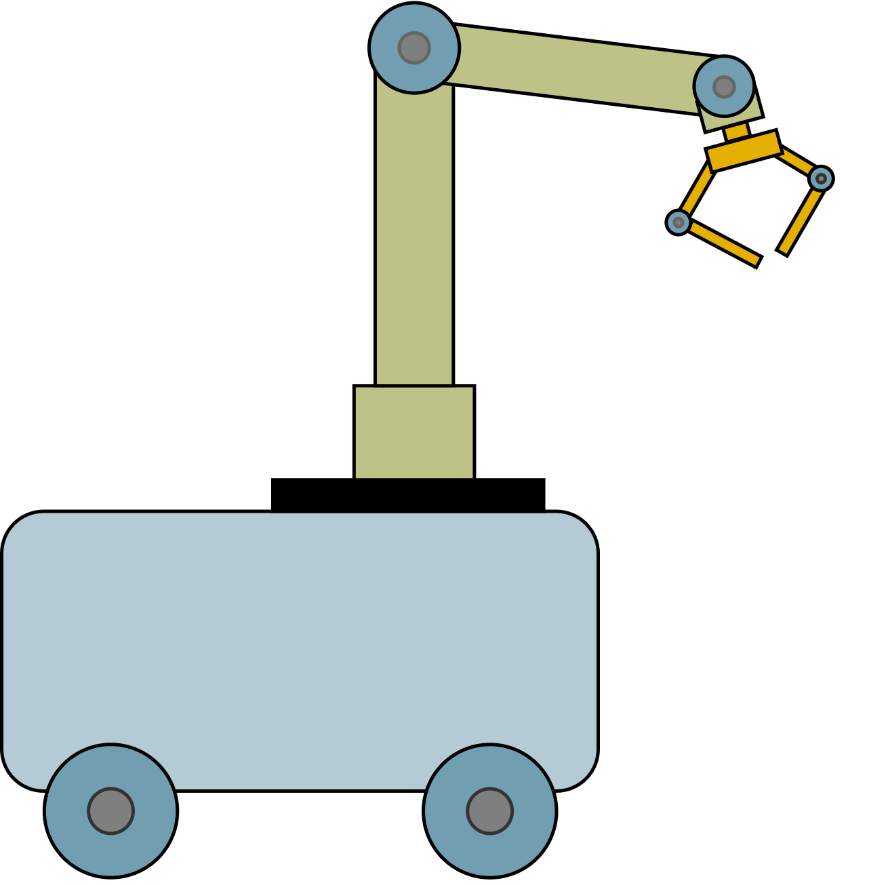

Resources
The resources provided in the resources folder are available for use under CC-BY license  .
The original authors are named either in the documents or in the list down below.
.
The original authors are named either in the documents or in the list down below.
Any files submitted to the documentation should be “licensed” by stating your name and ros2_control organization if no company name applicable, e.g., CC-BY My Name (ros2_control/company_name).
Presentations
2023-02 ROS Meetup Munich #5
Presentation: Tricycle Controller with ros2_control
- Summary:
In this presentation Pixel Robotics presents the contributed the Tricycle controller to ros2_controllers, prefaced by an introduction to ros2_control.
Presenters: Johannes Plapp & Tony Najjar
- Authors:
Johannes Plapp (Pixel Robotics)
Tony Najjar (Pixel Robotics)
2022-12 ROS-Industrial Conference 2022
Presentation: ros2_control - Kernel for ROS 2 controlled robots
- Summary:
ros2_control is a hardware-agnostic control framework focusing on the modular composition of control systems for robots, sharing of controllers as well as real-time performance. The framework provides “kernel” functionality for robots by abstracting the hardware and doing heavy low-level management, for example, hardware lifecycle, communication and access control.
Presenter: Dr. Denis Stogl
- Authors:
Dr. Denis Stogl (Stogl Robotics Consulting)
2022-10 ROSCon 2022
Presentation: A practitioner’s guide to ros2_control
- Summary:
ros2_control is a hardware-agnostic control framework focusing on the modular composition of control systems for robots, sharing of controllers as well as real-time performance. The framework provides controller-lifecycle and hardware management on top of abstractions of real or virtual hardware interfaces.
This talk delves deeper into ros2_control, showcasing new features and what they could be used for, such as explicit lifecycle management, chaining controllers, emergency-stop handlers and mock components. Finally, we showcase different usages of ros2_control on openly accessible examples.
Presenter: Dr. Bence Magyar
- Authors:
Dr. Bence Magyar (FiveAI Ltd)
Dr. Denis Stogl (Stogl Robotics Consulting)
2022-06 ROSCon Fr 2022
Presentation: What is new in the best (and only) control framework for ROS2 - ros2_control
- Summary:
ros2_control is a hardware-agnostic control framework with a focus on both real-time performance and sharing of controllers. The framework has become one of the main utilities for abstracting hardware and low-level control for 3rd party solutions like MoveIt2 and Nav2 systems.
The presentation provides practical tips to use ros2_control, from creating a robot description, writing hardware drivers to configuring standard controllers. Some hot-new features, like controller chaining, will be shown. Furthermore, you will get introduced to concepts like modular reuse of hardware drivers, multi-robot architectures and parameters injection for controllers.
Presenter: Dr. Denis Stogl
- Authors:
Dr. Denis Stogl (Stogl Robotics Consulting)
2021-10 ROS World 2021
Presentation: ros2_control - The future of ros_control
- Summary:
ros2_control is a robot-agnostic control framework with a focus on both real-time performance and sharing of controllers. The framework offers controller lifecycle and hardware resource management, as well as abstractions on hardware interfaces.
Controllers expose ROS interfaces for 3rd party solutions to robotics problems like manipulation path planning (moveit2) and autonomous navigation (nav2). The modular design makes it ideal for both research and industrial use. A robot made up of a mobile base and an arm that supports ros2_control needs no extra code, only a few controller configuration files and it is ready to go.
Presenter: Dr. Bence Magyar
- Authors:
Dr. Bence Magyar (FiveAI Ltd)
Denis Stogl (Stogl Robotics Consulting)
Presentation: Making a robot ROS 2 powered - a case study using the UR manipulators
- Summary:
With the release of ros2_control and MoveIt 2, ROS 2 Foxy finally has all the “ingredients” needed to power a robot with similar features as in ROS 1. We present the driver for Universal Robot’s manipulators as a real-world example of how robots can be run using ROS 2. We show how to realize multi-interface support for position and velocity commands in the driver and how to support scaling controllers while respecting factors set on the teach pendant. Finally, we show how this real-world example influences development of ros2_control to support non-joint related inputs and outputs in its real-time control loop.
Presenter: Denis Štogl
- Authors:
Denis Štogl (PickNik Inc.)
Dr. Nathan Brooks (PickNik Inc.)
Lovro Ivanov (PickNik Inc.)
Dr. Andy Zelenak (PickNik Inc.)
Rune Søe-Knudsen (Universal Robots)
Presentation: Online Trajectory Generation and Admittance Control in ROS2
- Summary:
One of the top reasons to upgrade from ROS1 to ROS2 is better suitability for realtime tasks. We discuss the development of a new ROS2 controller to handle realtime contact tasks such as tool insertion with industrial robots. The admittance controller handles trajectories and single-waypoint streaming commands, making it compatible with MoveIt and many teleoperation frameworks. Part of the work involved ensuring kinematic limits (position/velocity/acceleration/jerk) are obeyed while limiting interaction forces with the environment. Finally, we give practical recommendations and examples of the admittance controller. A live demo will be shown at our booth.
Presenter: Dr. Andy Zelenak
- Authors:
Dr. Andy Zeleank (PickNik Inc.)
Denis Štogl (PickNik Inc.)
2021-10-07 Weekly Robotics Meetup #13
Meetup presentation: Getting started with ros2_control
- Summary:
ros2_control is a robot-agnostic control framework with a focus on both real-time performance and sharing of controllers. The framework offers controller lifecycle and hardware-resource management, as well as abstractions on hardware interfaces.
Controllers expose ROS interfaces for 3rd party solutions to robotics problems like manipulation path planning (moveit2) and autonomous navigation (the ROS2 navigation stack). Hardware components on the other side provide a unified interface for robotic hardware, enabling standardized life-cycle and access management. The modular design makes ros2_control ideal for both research and industrial use. For example, a robot made up of a mobile base and an arm that supports ros2_control needs no extra code, only a few controller configuration files, and it is ready to go.
In this talk, we will discuss concepts of ros2_control framework compared to ros(1)_control framework and show examples of their use in the wild.
Presenters: Dr. Bence Magyar and Denis Štogl
- Authors:
Dr. Bence Magyar (FiveAI Ltd)
Denis Stogl (Stogl Robotics Consulting)
2021-06 ROSDevDay 2021
Presenters: Dr. Bence Magyar and Denis Štogl
- Authors:
Dr. Bence Magyar (FiveAI Ltd)
Denis Stogl (Stogl Robotics Consulting)
2021-05 ROSCon Fr 2021
Presentation: Getting started with ros2_control
- Summary:
The presentation gives a quick overview on the basic concepts and some simple implementation examples. We show implementing a simple Hardware Abstraction Layer (aka SystemComponent) and a forwarding controller. Once done, we also look into modifying the controller with the example goal of changing the type of the command topic.
Presenter: Dr. Bence Magyar
Diagrams
Folder with diagrams and sources for the images. Simply use diagrams.net for editing.
ros2_control - a collection of ros2_control-related diagrams.
overview diagrams
integration with MoveIt2
class diagrams
lifecycle diagrams
command and state interfaces examples
mobile manipulator architectures
Force-Control architectures
Images
Generated images for the presentation which can be useful also for the documentation.
- Overview of ros2_control

- ros2_control robot integration with MoveIt2
- 
- Architecture of complex controller and semantic components:

- Architecture of command and state interfaces:

- Lifecycle of hardware interfaces:

- ros2_control integration with MoveIt2
- Controllers architecture with chained controllers - admittance controller example

- Controllers architecture with chained controllers - admittance controller example (URDF)

- Controllers architecture without chained controllers - admittance controller example

- Controllers architecture with chained controllers - mobile base controller example

- Controllers architecture with chained controllers - mobile base controller example (URDF)

- Controllers architecture without chained controllers - admittance controller example

- Controllers architecture - overview

- Controllers architecture - URDF

- Hardware architecture - independent communication to the hardware (modular hardware)

- Hardware architecture - independent communication to the hardware (modular hardware) (URDF)

- Hardware architecture - gripper communication through Arm
- 
- Hardware architecture - gripper communication through Arm (URDF)
- 
- Hardware architecture - monolitic communication to hardware

- Hardware architecture - monolitic communication to hardware (URDF)

- Hardware architecture - multiple hardware in one controller manager
- 
- Example files - ros2_control - “Controlko” mobile manipulator
- 
- Example files - ros2_control - “Controlko” mobile manipulator (URDF)